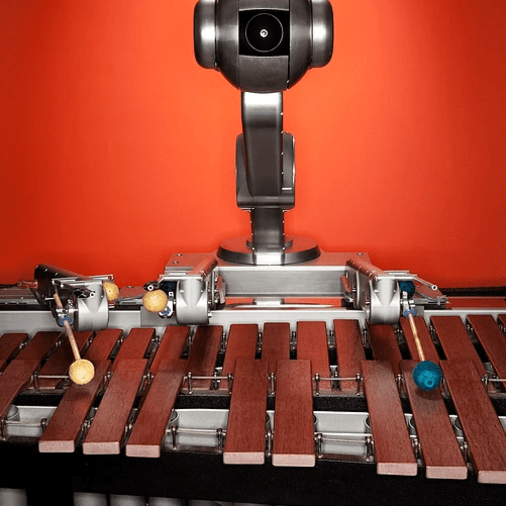
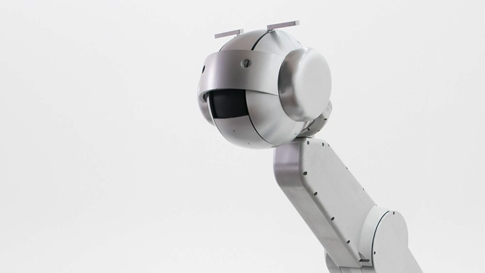

Guest Lecture
During this course, there were a total of three guest lectures, each with different topics and leturers. For the portfolio assignment, I was to choose a project, subject or example from one of the three lectures to write an article on.
During this course, there were a total of three guest lectures, each with different topics and leturers. For the portfolio assignment, I was to choose a project, subject or example from one of the three lectures to write an article on.
I chose Shimon, the Robot Musician as subject for this assignment. Shimon was discussed during the third HCI guest lecture by Peter van der Putten, assistant professor at Leiden University. Shimon falls under the category of creative robots.
Shimon, the Robot Musician was created by Georgia Tech Center for Music Technology in Atlanta, GA, USA. The goal of the Robot Musician is to research and explore the possibilities of improvisation by robotic musicians, in collaboration with human musicians.
When Shimon was first introduced back in 2017, it could play melodies on an instrument known as the marimba. Since then, it has learned some new skills, such as singing, dancing, writing lyrics and even compose its own songs, hence its new status as a singer-songwriter!
Shimon was fed a whopping 50.000 lyrics from all different sorts of music genres. It then used deep learning, a type of machine learning using algorithms, to teach itself to write its own lyrics. Shimon uses mechanically engineered robotic arms and hands to operate instruments, and its head includes a moving robotic mouth as audio output for its ‘singing’. Shimon uses computer vision through a camera on its head. The purpose of this camera is to read and then interpret sheet music.
The fact that Shimon works so well in collaboration with human musicians is quite promising for future applications of robotic musicians. People often think robots will replace humans. However, Shimon proves that robots can in fact work very well together with humans, instead of replacing them. The upgraded version of Shimon has got wiggling eyebrows, its mouth moves in sync with the music, and its head moves to show its emotions. This all contributes to Shimon being more human-like than when it would just be a bunch of metal. Therefore, interacting with Shimon directly improves the image of robotics performing human tasks and working together with humans to enhance an experience, product or concept. This directly ties into Human Computer Interaction & Technology. It shows a technological advancement that interacts with humans in a way that I’ve never seen before.
I chose to write this assignment on Shimon, the Robot Musician, because I think the future applications of robotic musicians and artificially composed music is very promising and interesting. That’s because it shows firsthand how human activities and interactions can be improved upon and strengthened by adding technology in the form of robots with human capabilities, skills and emotions.
Check the video below to see Shimon, the Robot Musician in action!